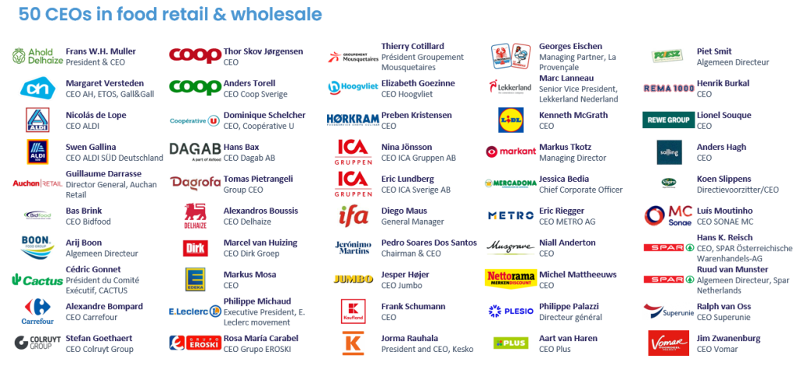

🛒 Αθέμιτες εμπορικές πρακτικές: το λιανεμπόριο τροφίμων απευθύνεται στη φον ντερ Λάιεν
50 επικεφαλής αλυσίδων λιανικής και χονδρικής τροφίμων που συμμετέχουν στην EuroCommerce ζητούν με κοινή επιστολή η αναθεώρηση της οδηγίας για τις αθέμιτες εμπορικές πρακτικές να προστατεύει τους αγρότες και τους μικρούς προμηθευτές, όχι τις πολυεθνικές των επώνυμων προϊόντων. Η πρόταση της Κομισιόν αναμένεται τον Ιανουάριο.
Πηγή: Επιστολή των επικεφαλής αλυσίδων λιανικής και χονδρικής τροφίμων προς την Πρόεδρο της Κομισιόν, 23/11/2026 · Ευρωπαϊκή Επιτροπή, δημόσια διαβούλευση για τους γεωγραφικούς περιορισμούς εφοδιασμού
Τι συμβαίνει
Η Κομισιόν ετοιμάζει την αναθεώρηση της Οδηγίας (ΕΕ) 2019/633 για τις αθέμιτες εμπορικές πρακτικές στην αλυσίδα εφοδιασμού γεωργικών προϊόντων και τροφίμων. Η νομοθετική πρόταση αναμένεται τον Ιανουάριο του 2027. υπό εξέταση
Στις 23 Νοεμβρίου 2026, 50 διευθύνοντες σύμβουλοι και επικεφαλής αλυσίδων λιανικής και χονδρικής τροφίμων που συμμετέχουν στην EuroCommerce έστειλαν κοινή επιστολή στην Πρόεδρο της Κομισιόν.

Πηγή: Επιστολή των επικεφαλής αλυσίδων λιανικής και χονδρικής τροφίμων προς την Πρόεδρο της Κομισιόν, 23/11/2026 · EuroCommerce, Επιτροπή Εφοδιαστικής Αλυσίδας, σημείωμα για τη συνεδρίαση της 30/11/2026
Τι λέει η επιστολή
- Το λιανικό και χονδρικό εμπόριο τροφίμων απασχολεί πάνω από 8 εκατ. ανθρώπους στην Ευρώπη και συνδέει καθημερινά αγρότες και παραγωγούς με τους καταναλωτές, σε πόλεις και αγροτικές περιοχές.
- Οι υπογράφοντες στηρίζουν την προστασία των αγροτών από πρακτικές που αποδεδειγμένα είναι αθέμιτες. Θεωρούν όμως λάθος να επεκταθεί η ίδια, μονομερής προστασία στους παγκόσμιους παρασκευαστές επώνυμων προϊόντων: θα τους εμπόδιζε να διαπραγματεύονται για λογαριασμό των καταναλωτών και να εξασφαλίζουν προσιτές τιμές, χωρίς όφελος για τους αγρότες.
- Θα ήταν επίσης ασυνεπές: η ενίσχυση των ήδη ισχυρών παγκόσμιων εταιρειών επώνυμων προϊόντων θα υπονόμευε τον στόχο της ίδιας της Κομισιόν να αντιμετωπίσει τους γεωγραφικούς περιορισμούς εφοδιασμού που επιβάλλουν αυτές οι εταιρείες. Η Πρόεδρος της Κομισιόν τους έθεσε ως προτεραιότητα στην επιστολή προθέσεών της προς το Ευρωπαϊκό Κοινοβούλιο, και το Ευρωπαϊκό Συμβούλιο έχει ζητήσει να αντιμετωπιστούν.
- Με τον πληθωρισμό να ανεβαίνει ξανά, οι καταναλωτές πρέπει να απολαμβάνουν τα οφέλη της ενιαίας αγοράς και όχι να πληρώνουν τον λογαριασμό του κατακερματισμού της.
Πηγή: Επιστολή των επικεφαλής αλυσίδων λιανικής και χονδρικής τροφίμων προς την Πρόεδρο της Κομισιόν, 23/11/2026
Τα τρία αιτήματα
- Η αναθεώρηση να μείνει επικεντρωμένη στην προστασία των αγροτών και των μικρότερων προμηθευτών, χωρίς μονομερή προστασία για τους παγκόσμιους παρασκευαστές.
- Να στοχεύσει μια σύντομη λίστα πρακτικών που αποδεδειγμένα βλάπτουν τους αγρότες και να μην παρεμβαίνει στη διαμόρφωση των τιμών.
- Να διασφαλίσει τις διασυνοριακές αγορές (cross-border sourcing) και τις κοινές αγορές (joint purchasing), ως βασικούς μοχλούς ανταγωνισμού στην ενιαία αγορά.
Οι υπογράφοντες σημειώνουν ότι οι αγρότες αντιμετωπίζουν πραγματικές δυσκολίες: κλιματικούς κινδύνους, υψηλό κόστος εισροών, ασταθείς αγορές και γεωπολιτική αβεβαιότητα. Υπάρχουν ήδη πολλά εργαλεία για να τους στηρίξουν. Κατά την επιστολή, η Κομισιόν θα πρέπει πρώτα να εξετάσει γιατί αυτά δεν χρησιμοποιούνται περισσότερο, πριν προσθέσει νέο επίπεδο κανόνων.
Πηγή: Επιστολή των επικεφαλής αλυσίδων λιανικής και χονδρικής τροφίμων προς την Πρόεδρο της Κομισιόν, 23/11/2026
Η σύνδεση με τους γεωγραφικούς περιορισμούς εφοδιασμού
Οι γεωγραφικοί περιορισμοί εφοδιασμού είναι πρακτικές προμηθευτών που εμποδίζουν τους εμπόρους να αγοράσουν το ίδιο προϊόν από άλλη χώρα της ΕΕ, όπου μπορεί να είναι φθηνότερο.
- Κομισιόν: στη Στρατηγική για την Ενιαία Αγορά δεσμεύτηκε να αναπτύξει εργαλεία κατά των αδικαιολόγητων περιορισμών ως το τέλος του 2026. Τον Μάιο του 2026 άνοιξε δημόσια διαβούλευση, που κλείνει στις 4 Δεκεμβρίου. Η δράση για τους περιορισμούς έχει προγραμματιστεί για το γ΄ τρίμηνο του 2027.
- Ευρωπαϊκό Κοινοβούλιο: η Επιτροπή Εσωτερικής Αγοράς και Προστασίας των Καταναλωτών (IMCO) ετοιμάζει έκθεση ιδίας πρωτοβουλίας για τους περιορισμούς, πιθανότατα στις αρχές του 2027 υπό εξέταση. Εισηγήτρια είναι η ευρωβουλευτής Borzan και σκιώδης εισηγητής ο Έλληνας ευρωβουλευτής Τσιόδρας.
- Νέα έρευνα: σύμφωνα με την EuroCommerce, η Κομισιόν άνοιξε επίσημη αντιμονοπωλιακή έρευνα σε μεγάλο εμφιαλωτή αναψυκτικών για πρακτικές που φέρεται να περιορίζουν το διασυνοριακό εμπόριο: εκπτώσεις χονδρικής με όρο να μην εξάγονται τα ποτά σε άλλες χώρες της ΕΕ, διαφορετικά μεγέθη συσκευασίας ανά χώρα, κίνητρα στους πελάτες να περιορίζουν τις εισαγωγές ποτών στην Ισπανία και άρνηση πανευρωπαϊκών συμφωνιών αγοράς, που αναγκάζει σε χωριστές εθνικές διαπραγματεύσεις.
- EuroCommerce: ζητά οι δύο φάκελοι να εξεταστούν μαζί. Στις 30 Νοεμβρίου οργανώνει ενημέρωση για τις αθέμιτες πρακτικές με εκπροσώπους των κρατών μελών, ενόψει της Ειδικής Επιτροπής Γεωργίας του Συμβουλίου.
Πηγή: EuroCommerce, Επιτροπή Εφοδιαστικής Αλυσίδας, σημείωμα για τη συνεδρίαση της 30/11/2026 · EuroCommerce, ομάδα εργασίας για τα αγροδιατροφικά, 23/11/2026 · EuroCommerce, Δίκτυο Advocacy, 19/11/2026 · EuroCommerce, InBrief 333, 11/11/2026 · Ευρωπαϊκή Επιτροπή, δημόσια διαβούλευση για τους γεωγραφικούς περιορισμούς εφοδιασμού
Κοινή Οργάνωση Αγορών 2028–2034: όχι στις ελάχιστες τιμές
Τον Ιούλιο του 2025 η Κομισιόν πρότεινε αλλαγές στον Κανονισμό για την Κοινή Οργάνωση Αγορών (ΚΟΑ): προώθηση προϊόντων, σχολικά προγράμματα, επισιτιστική ασφάλεια. Στο Ευρωπαϊκό Κοινοβούλιο κατατέθηκαν πολλές τροπολογίες, κάποιες από τις οποίες θα υποχρέωναν την αλυσίδα εφοδιασμού να διατηρεί στρατηγικά αποθέματα για περιόδους κρίσης. Η Επιτροπή Γεωργίας (AGRI) επεξεργάζεται συμβιβαστικές τροπολογίες για ψηφοφορία τον Δεκέμβριο. Τον Οκτώβριο το Συμβούλιο συμφώνησε σε μερική διαπραγματευτική θέση.
Πηγή: EuroCommerce, Επιτροπή Εφοδιαστικής Αλυσίδας, σημείωμα για τη συνεδρίαση της 30/11/2026
Η θέση της EuroCommerce:
- Οργανώσεις παραγωγών και συνεταιρισμοί: ναι. Συγκεντρώνοντας την προσφορά εξασφαλίζουν επαρκείς ποσότητες, ποιότητα και σταθερότητα, και το εμπόριο ήδη συνεργάζεται μαζί τους.
- Ελάχιστες και εγγυημένες τιμές: όχι. Οι δείκτες κόστους παραγωγής μπορούν να βοηθούν τη διαφάνεια στις διαπραγματεύσεις, αλλά πρέπει να μένουν καθαρά ενημερωτικοί. Η σύνδεση των τιμών με το κόστος παραγωγής θα επανέφερε τις διοικητικά καθορισμένες τιμές και θα αύξανε το κόστος για τους καταναλωτές. Προηγούμενες τέτοιες πολιτικές εγκαταλείφθηκαν επειδή οδήγησαν σε υπερπαραγωγή και χαμηλές τιμές.
- Μια ειδική αναθεώρηση της ΚΟΑ για τη θέση των αγροτών στην αλυσίδα εγκρίθηκε από όλους τους συννομοθέτες το καλοκαίρι του 2026. Η EuroCommerce ζητά η τρέχουσα αναθεώρηση να μην ξανανοίξει αυτά τα ζητήματα.
- Σήμανση προέλευσης: ένα εναρμονισμένο, προαιρετικό ευρωπαϊκό πλαίσιο, όχι υποχρεωτική σήμανση μέσω προτύπων εμπορίας, αφού η ενημέρωση των καταναλωτών ήδη ρυθμίζεται από τον Κανονισμό 1169/2011. Τα ΠΟΠ και ΠΓΕ αρκούν για την προέλευση.
- Ονομασίες κρέατος: το ισχύον πλαίσιο κρίνεται επαρκές και η συζήτηση δεν πρέπει να ξανανοίξει.
- Σύντομες αλυσίδες και τοπικά προϊόντα: ναι, αλλά εθελοντικά, χωρίς υποχρεωτικές προμήθειες συγκεκριμένης προέλευσης.
- Ετοιμότητα και αποθέματα: τα στρατηγικά αποθέματα να είναι προσωρινά, στοχευμένα και αναλογικά, με ανακύκλωση των αποθεμάτων ώστε να μη χάνονται τρόφιμα.
Πηγή: EuroCommerce, θέση για την Κοινή Οργάνωση Αγορών 2028–2034, Νοέμβριος 2026
Επόμενα βήματα
- 30/11/2026EuroCommerce: ενημέρωση για τις αθέμιτες πρακτικές με εκπροσώπους των κρατών μελών
- 4/12/2026Κομισιόν: λήξη της διαβούλευσης για τους γεωγραφικούς περιορισμούς εφοδιασμού
- Δεκέμβριος 2026Ευρωπαϊκό Κοινοβούλιο: ψηφοφορία της Επιτροπής AGRI για την ΚΟΑ
- Ιανουάριος 2027Κομισιόν: πρόταση για την αναθεώρηση της οδηγίας για τις αθέμιτες πρακτικές υπό εξέταση
- Αρχές 2027Ευρωπαϊκό Κοινοβούλιο: έκθεση ιδίας πρωτοβουλίας της IMCO για τους γεωγραφικούς περιορισμούς υπό εξέταση
- Γ΄ τρίμηνο 2027Κομισιόν: δράση για τους γεωγραφικούς περιορισμούς εφοδιασμού
Πηγή: EuroCommerce, Επιτροπή Εφοδιαστικής Αλυσίδας, σημείωμα για τη συνεδρίαση της 30/11/2026 · EuroCommerce, ομάδα εργασίας για τα αγροδιατροφικά, 23/11/2026 · EuroCommerce, InBrief 333, 11/11/2026
Γιατί έχει σημασία
Για το ελληνικό εμπόριο τροφίμων, η αναθεώρηση θα κρίνει πόσο ελεύθερα θα διαπραγματεύεται με τους μεγάλους προμηθευτές επώνυμων προϊόντων. Οι γεωγραφικοί περιορισμοί έχουν ιδιαίτερη σημασία για μικρές αγορές, όπως η ελληνική: όταν ο έμπορος δεν μπορεί να αγοράσει το ίδιο προϊόν από φθηνότερη αγορά της ΕΕ, το κόστος καταλήγει στο καλάθι του νοικοκυριού. Η διαβούλευση είναι ανοιχτή ως τις 4 Δεκεμβρίου και είναι ευκαιρία για πρακτικά παραδείγματα από την αγορά.
📘 Οι όροι του θέματος
| Όρος | Τι σημαίνει |
|---|---|
| Αθέμιτες εμπορικές πρακτικές | Πρακτικές στην αλυσίδα τροφίμων που η ΕΕ απαγορεύει για να προστατεύσει τους μικρότερους προμηθευτές |
| Γεωγραφικοί περιορισμοί εφοδιασμού | Όταν ένας προμηθευτής εμποδίζει ένα κατάστημα να αγοράσει το ίδιο προϊόν από άλλη χώρα της ΕΕ |
| Κοινή Οργάνωση Αγορών (ΚΟΑ) | Οι ευρωπαϊκοί κανόνες για την αγορά αγροτικών προϊόντων |
| Έκθεση ιδίας πρωτοβουλίας | Έκθεση που συντάσσει μια επιτροπή του Ευρωκοινοβουλίου με δική της πρωτοβουλία, χωρίς νομοθετική πρόταση |
| ΠΟΠ / ΠΓΕ | Προστατευόμενη Ονομασία Προέλευσης / Προστατευόμενη Γεωγραφική Ένδειξη |
Οι ορισμοί είναι επιμέλεια του Policy Radar.
Πηγές: Επιστολή των επικεφαλής αλυσίδων λιανικής και χονδρικής τροφίμων προς την Πρόεδρο της Κομισιόν, 23/11/2026 · EuroCommerce, Επιτροπή Εφοδιαστικής Αλυσίδας, σημείωμα για τη συνεδρίαση της 30/11/2026 · EuroCommerce, ομάδα εργασίας για τα αγροδιατροφικά, 23/11/2026 · EuroCommerce, Δίκτυο Advocacy, 19/11/2026 · EuroCommerce, InBrief 333, 11/11/2026 · EuroCommerce, θέση για την Κοινή Οργάνωση Αγορών 2028–2034, Νοέμβριος 2026 · Ευρωπαϊκή Επιτροπή, δημόσια διαβούλευση για τους γεωγραφικούς περιορισμούς εφοδιασμού · Ευρωπαϊκή Επιτροπή, σελίδα για τις αθέμιτες εμπορικές πρακτικές